Magnetisme
Magnetiske feltlinjer: Det går magentiske feltlinjer fra nord til sør på en magnet, og en magnet har alltid en sør- og en nordpol.
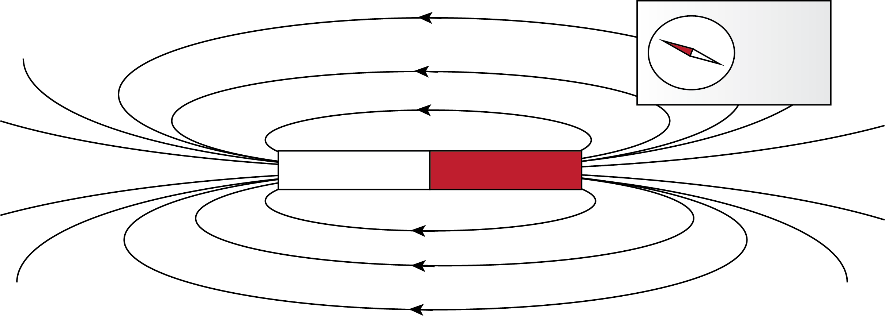
Jordas magentiske poler: Nordpolen på en magnet peker mot jordas magnetiske sørpol; Jordas geografiske nordpol er ved jordas magnetiske sørpol!
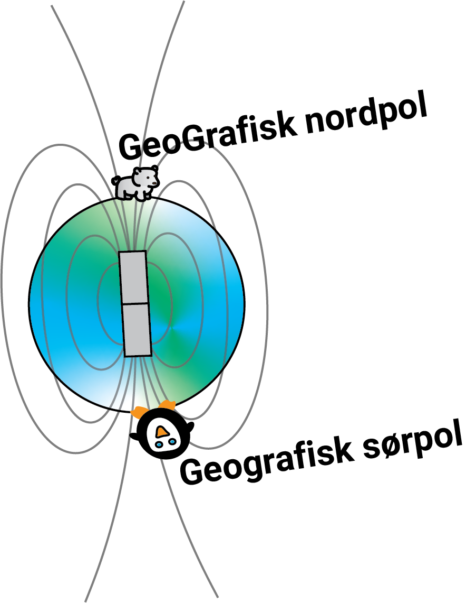
Magnetiske krefter: Like poler frastøter hverandre, og ulike poler tiltrekker hverandre, noe f.eks. Brio-tog viser.
Magnetisk feltstyrke/flukstetthet \(B\): Vi har to ord (synonymer) for styrken på magnetfelt; feltstyrke og flukstetthet. Enheten for magnetisk feltstyrke/fukstetthet \(B\) er T (tesla).
Når vi tegner magnetfelt er det ofte praktisk å tegne feltlinjene inn eller ut av arket. Vi bruker da denne symbolikken:
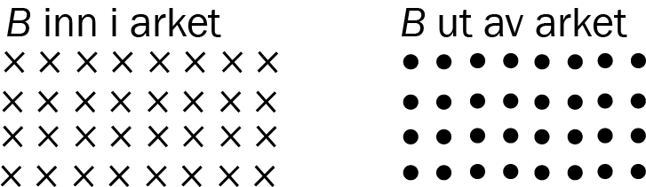
Ladning i magnetfelt
Kraft på ladning i magnetfelt: Den magnetiske kraften \(F_m\) på en ladning \(q\) i et magnetfelt med feltstyrke \(B\), er gitt ved \[ F_m = qvB \]
Høyrehåndregel nummer 1 viser sammenhengen mellom farten, magnetfeltet og den magnetiske kraften:
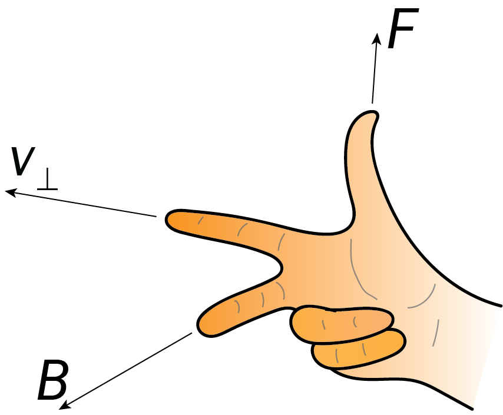
Eksempel
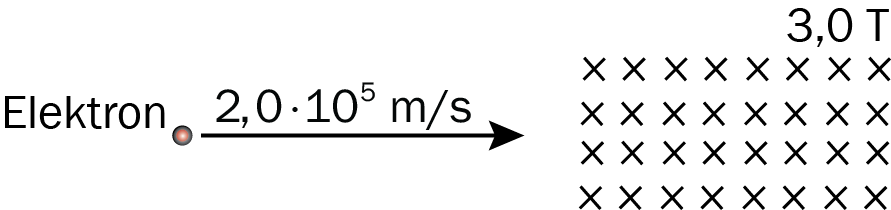
Bestem retningen og størrelsen til kraften som virker på et elektron når det kommer inn i magnetfeltet som vist over.Sirkelbane i magnetfelt: Når en ladning beveger seg i et homogent magnetfelt med en fart vinkelrett på feltet, får vi en sirkelbane, hvor summen av kreftene er \[ \Sigma F = \frac{mv^2}{r} = qvB \]
Eksempel
Bestem radien i sirkelbanen elektronet følger.Eksempel
Figuren viser en prinsippskisse for et massespektrometer.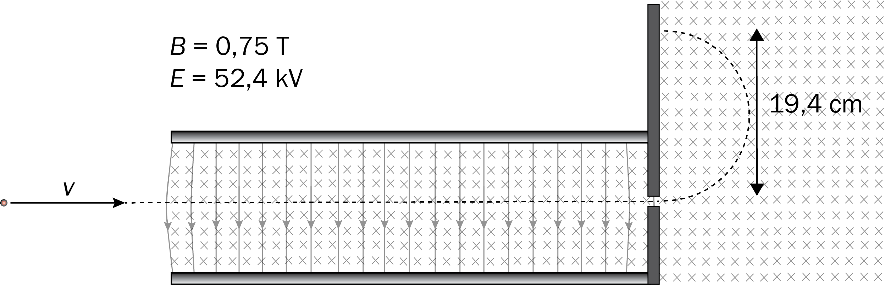
Én-verdige ioner med ukjent masse skytes inn i et område med et krysset elektrisk og magnetisk felt.Ioner som har så stor fart at de går rett frem, fortsetter inn i et område med bare et magnetisk felt.
Ved å måle radien til sirkelbanen ionene følger, kan vi bestemme massen.
Bestem massen til ionet ovenfor.
Strømleder i magnetfelt
Kraft på strømledning i magnetfelt: Den magnetiske kraften \(F_m\) på en strømleder som fører en strøm \(I\) i et magnetfelt med feltstyrke \(B\), er gitt ved \[ F_m = ILB \] hvor \(L\) er lengden av lederen som henger inne i magnetfeltet.
Høyrehåndregel nummer 1 viser sammenhengen mellom strømretningen, magnetfeltet og den magnetiske kraften:
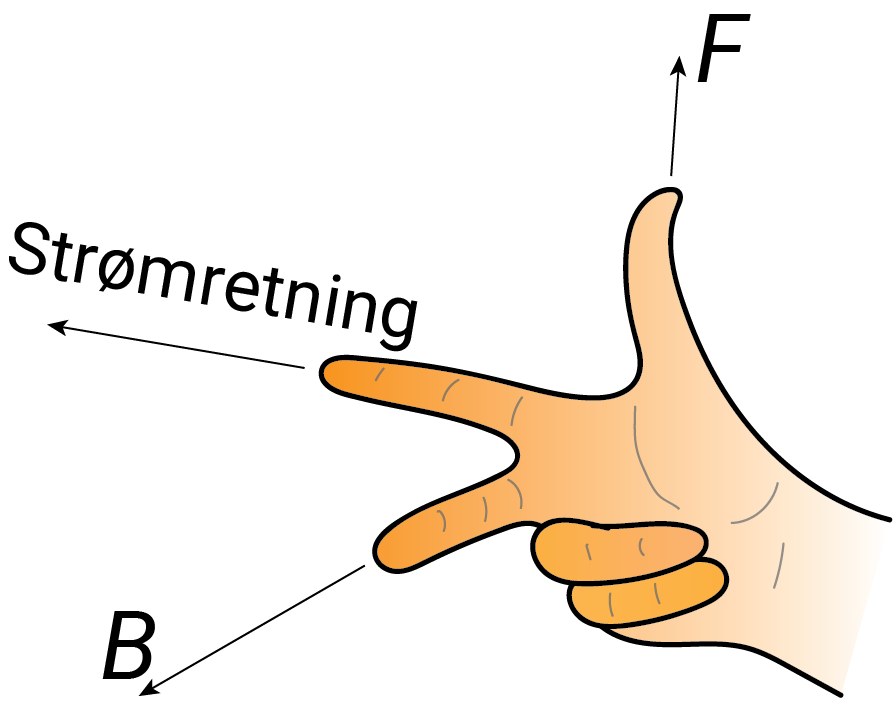
Eksempel
En strømkretse med masse 200 gram henger i et magnetfelt, slik figuren viser.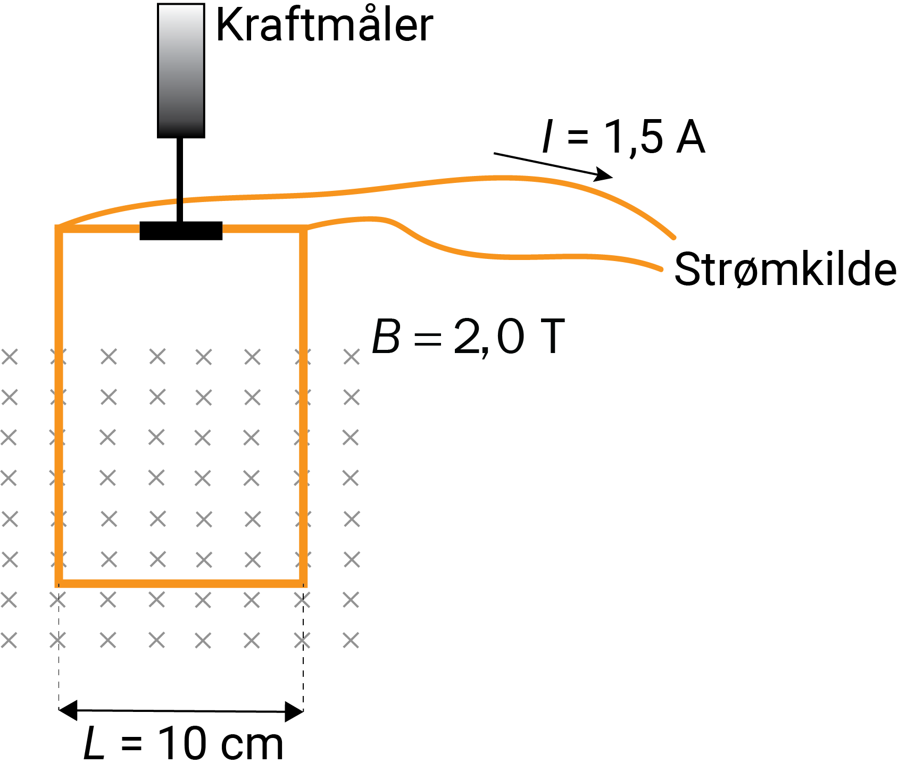
Bestem hvor stor kraft kraftmåleren viser.Magnetfelt fra strømleder
Biot-Savarts lov: I en avstand \(r\) fra en lang, rett strøm \(I\), er det et magnetfelt med feltstyrke \[ B = k_m \frac{I}{r} \;\;\;,\;\; \text{ hvor } k_m = 2 \cdot 10^{-7} Tm/A \] Høyrehåndsregel nummer 2 gir retningen:
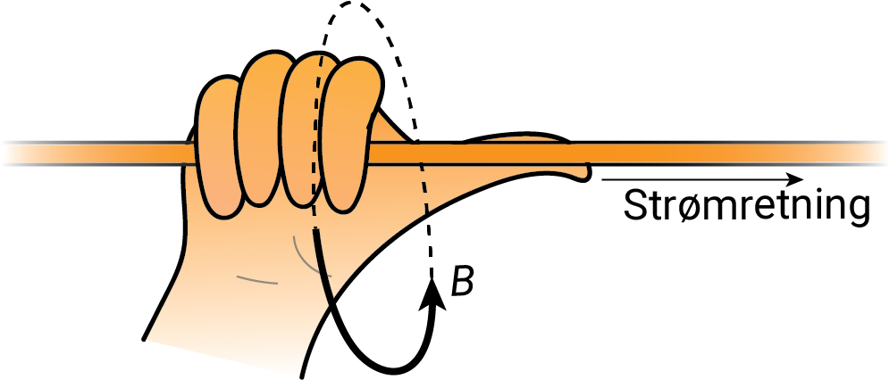
Eksempel
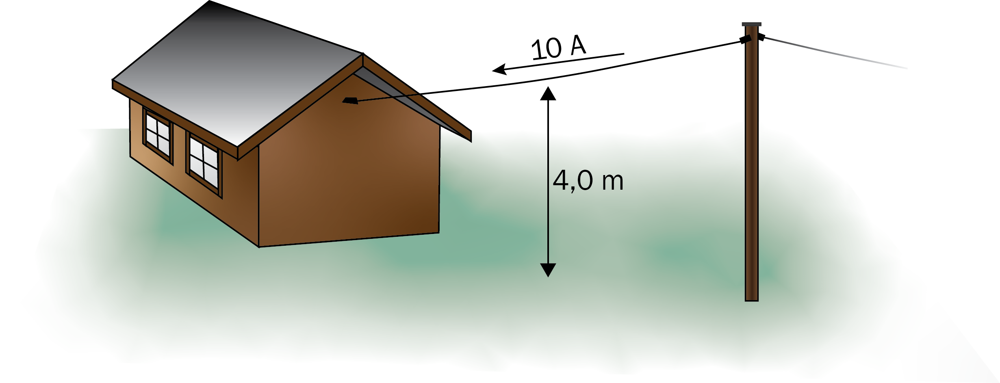
Bestem styrken og retningen til magnetfeltet ved bakken, rett nedenfor strømledningen.Eksempel
Forklar hvordan protonet blir påvirket av strømlederen.Høyrehåndsregel nummer 1 gir da at protonet dyttes inn i papirplanet (bort fra oss); Det vil svinge mot venstre for sin egen fartsretning.
Når protonet kommer nærmere, blir magnetfeltet sterkere, slik at kraften blir større, og protonet vil svinge skarpere.
Siden den magnetiske kraften hele tiden er vinkelrett på farten, påvirker ikke magnetfeltet størrelsen til kraften, bare retningen.
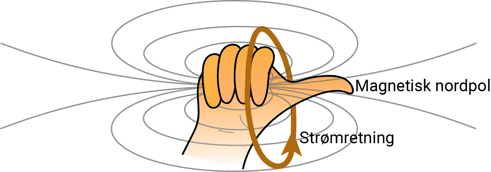
Eksempel
En magnet plasseres foran en strømspole, slik figuren viser. Hva skjer med magneten når vi sender strøm gjennom spolen, med retning som vist i figuren?Like poler frastøter hverandre, så magneten dyttes mot høyre.